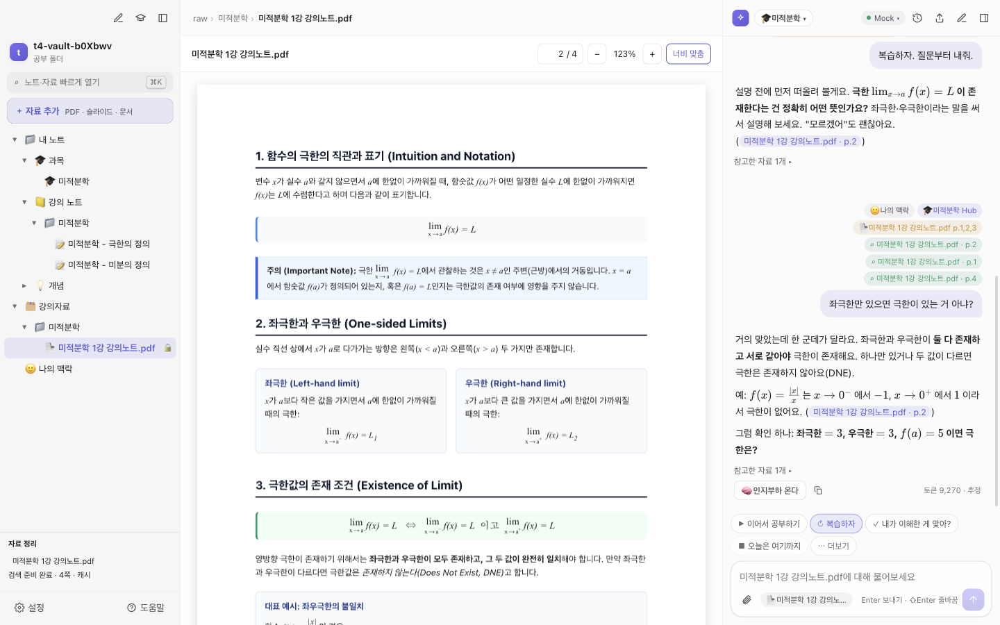
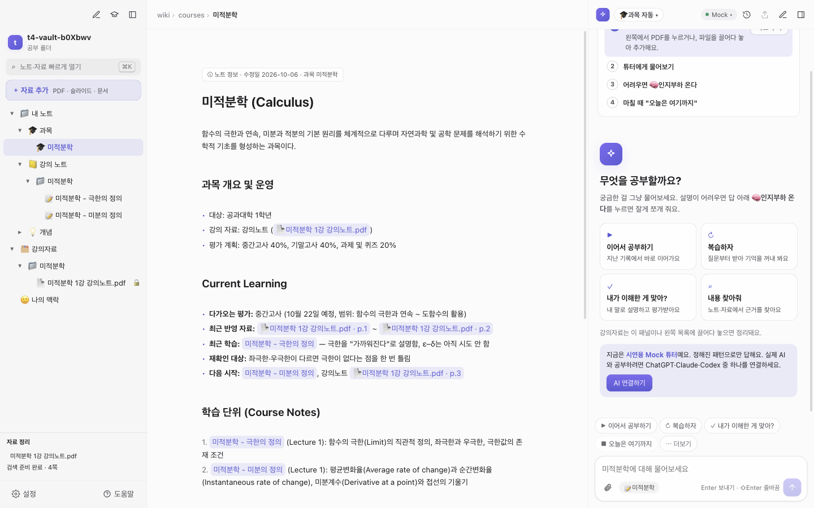
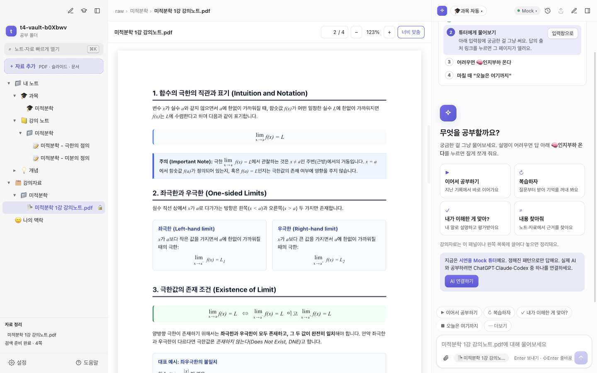
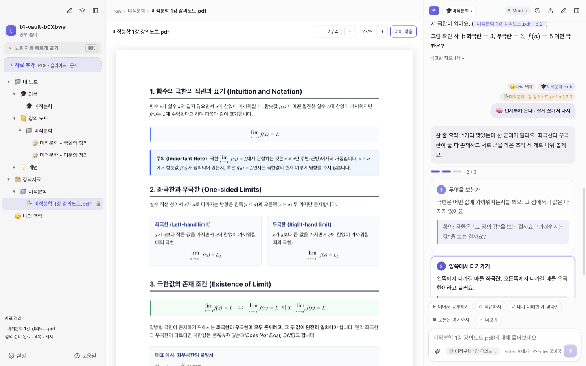
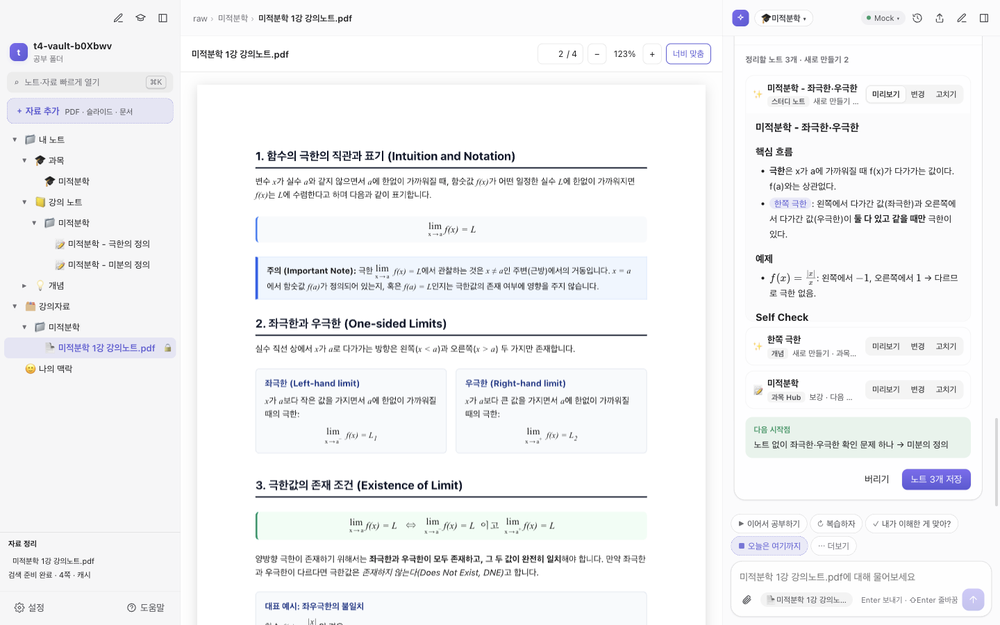
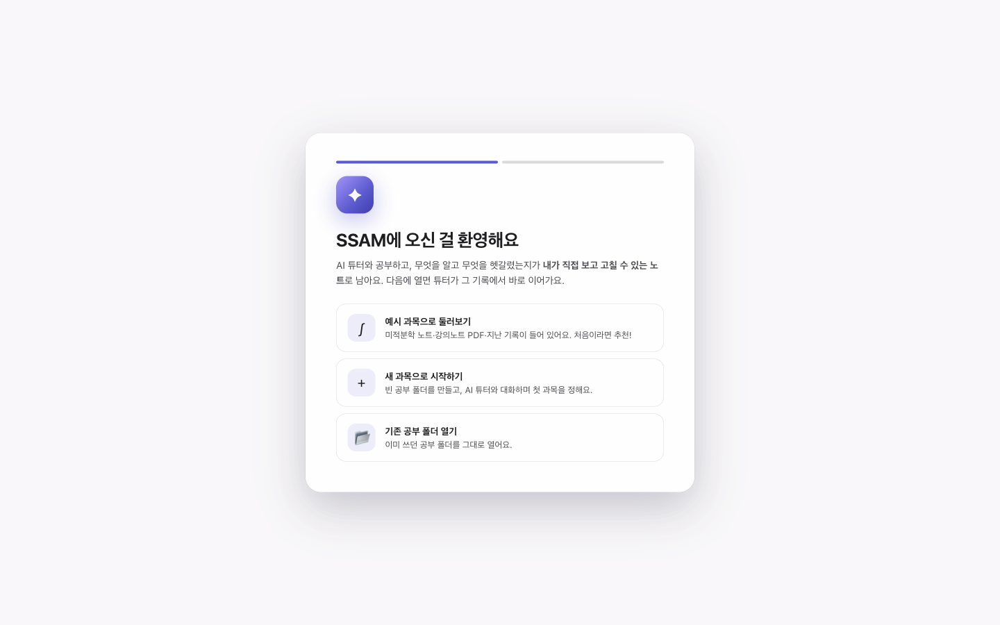
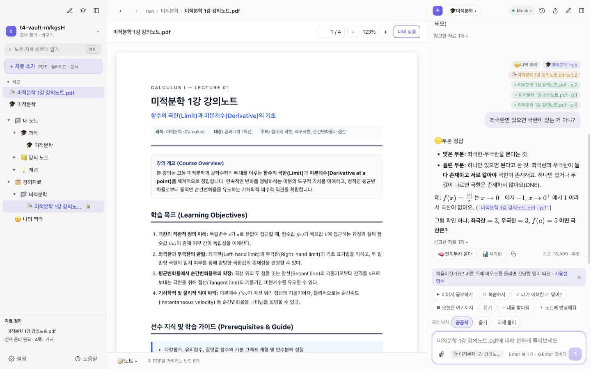
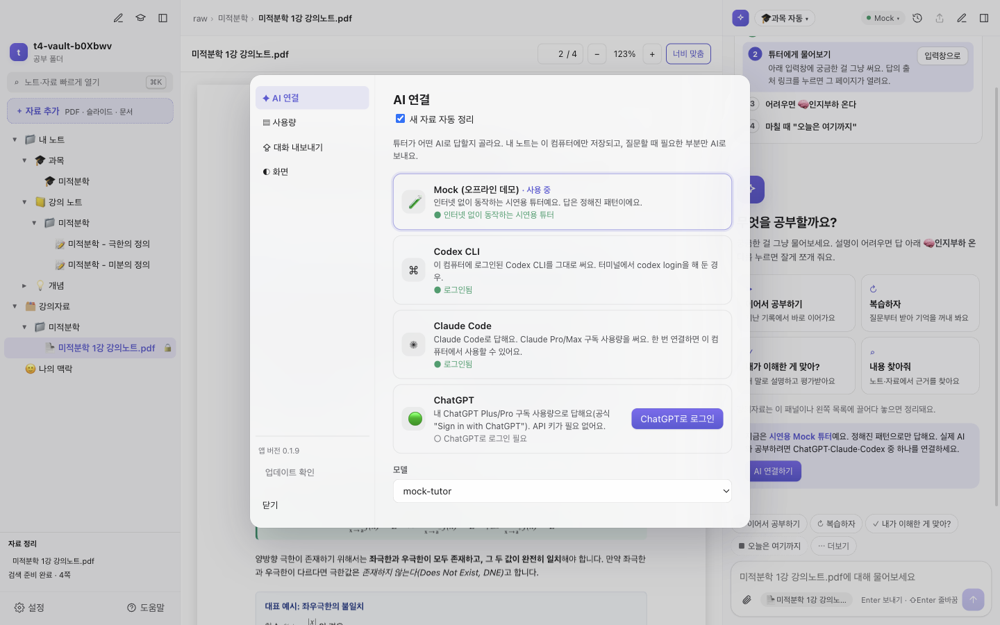

왜 만들었나요?
챗봇에게 물어보면 설명은 꽤 잘해 주는데, 다음 날이 되면 어디까지 공부했는지, 어떤 문제를 틀렸는지가 대화창 속에 그냥 묻혀 버리곤 했어요. 내가 보는 강의자료를 토대로 설명해 주고, 공부한 흔적이 내 컴퓨터 속 정리된 노트로 차곡차곡 쌓이는 튜터가 있었으면 해서 직접 만들었어요.
기존에 이미 결제해 쓰던 ChatGPT나 Claude 구독을 그대로 활용할 수 있는 공부 앱이 없었다는 점도 한몫했고요.
SSAM 개발자
강의 PDF를 넣고 질문하면 자료 쪽수를 짚어가며 설명하고, 오늘 배운 내용과 헷갈린 점을 직접 수정할 수 있는 노트로 정리해 줘요.

SSAM이 지키는 것
정리한 노트와 대화 기록은 서버가 아니라 내 컴퓨터 공부 폴더에 일반 마크다운 파일로 저장돼요. 앱을 지워도 파일은 그대로 남아 메모장이나 Obsidian, VS Code로 언제든 열 수 있어요.
~/Documents/SSAM/wiki/courses/미적분학.md튜터가 마음대로 노트를 고쳐 쓰지 않아요. 공부가 끝나면 기록 카드로 정리될 내용을 먼저 보여 주고, 직접 확인하고 승인한 내용만 파일에 남겨요.
노트 3개 저장 · 버리기ChatGPT Plus/Pro, Claude Pro/Max, Codex CLI 중 평소 쓰던 계정을 연결하면 돼요. 추가 결제나 복잡한 API 키 발급 없이 바로 써보세요.
ChatGPT로 로그인 ●챗봇 공부 모드와 다른 점
일반 챗봇은 대화창을 닫으면 공부 맥락이 끊겨요. SSAM은 과목별 진도와 헷갈린 내용을 노트에 남겨 두고, 다음 공부를 바로 거기서 이어서 시작해요.
튜터가 내 PDF와 노트를 직접 찾아 읽고 쪽수를 남겨 줘요. 누르면 해당 페이지가 바로 열려요.
강의노트.pdf · p.3과목 Hub에 적힌 진도와 다음 시작점을 튜터가 기억해 둬서, '이어서 공부하기' 버튼 하나로 곧바로 시작해요.
복습할 땐 질문부터 던져요. 힌트 없이 스스로 맞혀야 온전히 이해한 것으로 기록하고, 틀린 건 헷갈리는 목록에 남겨 둬요.
핵심 기능
왼쪽은 과목과 자료 목록, 가운데는 PDF와 마크다운 노트, 오른쪽은 AI 튜터 화면이에요. 자료를 넓게 보고 싶을 땐 ⌘\, ⌘L로 양쪽 패널을 접을 수 있어요. 자주 보는 자료는 ★로 즐겨찾기하고, 최근에 연 파일은 목록 상단에서 바로 찾아 열어요.
노트는 마크다운 문법이 실시간으로 렌더링되어 수식($x^2$)이나 노트 링크([[개념]])도 자연스럽게 쓸 수 있어요.

헷갈리는 문장을 드래그하면 튜터에게 묻기 버튼이 바로 떠요. 선택한 문장과 해당 페이지 번호가 질문에 자동으로 첨부돼요.
스캔한 전공 서적도 자체 OCR로 글자를 인식해 검색할 수 있고, 두꺼운 교재는 목차별로 나누어 읽어 큰 문서를 열어도 버벅대지 않아요. 화학 구조식이나 회로도, 그래프가 있는 페이지는 튜터가 그림을 직접 확인하며 설명해 줘요.

답변 아래 버튼을 누르면 복잡한 내용을 핵심 한 줄 요약과 3~5개의 짧은 단계로 나누어 차근차근 다시 풀어 줘요.

답변 아래 시각화를 누르면 개념에 맞춰 직접 슬라이더를 조작해 보는 대화형 그래프나 흐름도를 만들어 줘요. 파형 주기나 저항값을 바꿔 가며 결과를 확인하는 식이에요.
입력창 위에서 공부 방식을 골라요. 한 덩어리씩 확인하는 꼼꼼히, 큰 흐름을 빠르게 보는 훑기, 풀이에 집중하는 과제 풀이 중 내 페이스에 맞는 방식을 선택해 보세요. 이어서 공부할 땐 오늘 다룰 범위의 전체 흐름과 현재 위치를 먼저 짚어 줘요.
오늘은 여기까지를 누르면 오늘 배운 개념, 헷갈린 내용, 맞힌 문제와 틀린 문제, 다음 공부 시작점을 한 장의 카드로 정리해 줘요.
노트에 어떻게 반영될지 미리 확인하고 내용을 직접 고칠 수 있어요. 튜터의 정답 판정이 잘못됐다면 클릭해서 바로 수정할 수 있어요.
노트는 단순 대화 복사본이 아니라 혼자 다시 복습할 수 있는 교재 형태로 다듬어져 저장돼요. 오답은 자주 틀리는 것에 모이고, 다시 볼 항목에는 알맞은 복습 일정이 자동으로 잡혀요.

PDF나 슬라이드를 끌어다 놓으면 내용을 읽어 검색 색인을 만들고 요약 노트까지 준비해 둬요. 마음에 들지 않으면 언제든 되돌릴 수 있어요.
과목별로 정리해 둔 기존 폴더를 그대로 연결할 수 있어요. 파일을 옮기거나 복사할 필요 없이, 평소 쓰던 폴더에 새 자료를 넣으면 앱에도 즉시 반영돼요.
직접 푼 풀이를 적어 보내면 맞음, 부분 정답, 틀림으로 구분해 채점하고, 어느 부분이 맞았고 어디서 왜 틀렸는지 이유와 함께 설명해 줘요.
설치
아직 별도 인증서 서명을 등록하지 않아 처음 한 번은 운영체제 보안 경고가 떠요. 파일 문제가 아니니 아래 순서대로 실행해 주세요.
내려받은 dmg 파일을 열고, SSAM 아이콘을 오른쪽 Applications(응용 프로그램) 폴더로 끌어다 놓으세요. 기존 버전이 있다면 대치를 선택하면 돼요. 공부 폴더와 설정은 안전하게 유지돼요.
응용 프로그램 폴더에서 SSAM을 처음 실행하면 아래와 같은 보안 안내 창이 떠요. Apple 인증이 없어 뜨는 알림이니 휴지통으로 이동 대신 완료를 누르고 창을 닫아 주세요.
Apple은 'SSAM'에 사용자의 Mac에 손상을 입히거나 사용자의 개인정보에 침입할 수 있는 악성 코드가 없음을 확인할 수 없습니다.
휴지통으로 이동 완료노란 점선으로 표시된 완료 버튼을 눌러 창을 닫으세요. 실제 창과 문구가 조금 다를 수 있어요.
맥 시스템 설정 → 개인정보 보호 및 보안으로 이동해 아래쪽 보안 섹션으로 스크롤을 내려요. "'SSAM'의 사용이 차단되었습니다" 옆의 그래도 열기를 누르고 암호나 Touch ID로 승인해 주세요.
승인 후 SSAM을 다시 실행하고 열기를 누르면 끝이에요. 다음부터는 경고 없이 바로 열려요.
⌘+스페이스로 터미널을 열고, 아래 명령어를 복사해 붙여넣은 뒤 Enter를 누르세요. 최근에 받은 압축 파일을 풀고 Finder 창으로 열어 줘요.
rm -rf ~/Downloads/SSAM-new && ditto -x -k --noqtn "$(ls -t ~/Downloads/SSAM-mac-arm64-*.zip | head -1)" ~/Downloads/SSAM-new && xattr -cr ~/Downloads/SSAM-new/SSAM.app && open ~/Downloads/SSAM-new
이 명령어는 다운로드 격리 속성을 정리하고 임시 폴더(SSAM-new)에 풀어 손상 경고가 뜨지 않도록 처리해 줘요.
새로 열린 Finder 창의 SSAM.app을 응용 프로그램 폴더로 끌어다 놓으세요. 기존 버전이 있다면 대치를 누르면 돼요. 노트와 설정은 그대로 유지돼요.
2단계 터미널 명령을 건너뛰고 압축을 직접 풀었을 때 나타날 수 있어요. 앱 파일 손상이 아니라 다운로드 보안 표식 때문이니, 휴지통으로 이동을 누르지 말고 창을 닫은 뒤 2단계 명령어를 실행해 주세요.
Chrome이(가) 오늘 이 파일을 다운로드했습니다.
휴지통으로 이동 취소그림은 이해를 돕는 예시예요. 실제 창과 문구가 조금 다를 수 있어요.
Apple Silicon(M1 이상) 맥을 지원해요. 다음 업데이트부터는 앱 안의 업데이트 버튼으로 바로 새 버전을 적용할 수 있어요. macOS가 자동 교체를 막으면 앱이 Finder 창을 열어 끌어다 놓을 수 있게 도와줘요.
코드 서명 인증서가 없어 Windows의 PC 보호 화면이 떠요. 추가 정보 링크를 누르면 아래에 실행 버튼이 나타나요.
Microsoft Defender SmartScreen에서 인식할 수 없는 앱의 시작을 차단했습니다. 이 앱을 실행하면 PC에 위험이 발생할 수 있습니다.
추가 정보노란 점선으로 표시된 두 곳을 차례로 누르세요. 실제 화면과 조금 다를 수 있어요.
설치가 완료되면 앱이 바로 실행돼요. 시작 메뉴와 바탕 화면에 바로가기가 생성되며, 이후 업데이트는 앱 실행 시 자동으로 내려받아 적용돼요.
Windows 10/11 (64비트) 환경을 지원해요.
사용법
앱 안의 처음 해 볼 것 목록을 따라 순서대로 진행해 볼 수 있어요.
왼쪽 탐색기에서 PDF를 누르거나 새 파일을 끌어다 놓아 추가해요.
궁금한 점을 편하게 질문하세요. 튜터가 정리해 둔 노트와 강의자료를 살펴보고 답변해 줘요. 답변 속 p.4 출처를 누르면 해당 페이지가 바로 열려요.
답변 아래 인지부하 온다를 누르면 작은 단계로 나누어 차근차근 다시 설명해요.
학습 기록 카드를 확인하고 저장하면, 다음엔 이어서 공부하기로 곧바로 시작해요.
실제 SSAM 화면이에요. 표시된 버튼을 누르면 다음 단계로 넘어가요. 화면 속 답변은 연습용 튜터의 예시예요.

번호를 누르면 각 버튼이 하는 일을 자세히 볼 수 있어요.

AI 연결
설정(⌘,) → AI 연결에서 원하는 방식을 골라요. 질문할 때도 폴더 전체가 아니라 그 질문에 꼭 필요한 내용만 내가 연결한 AI로 전달돼요.
ChatGPT로 로그인을 누르고 브라우저에서 연동만 승인하면 돼요. 복잡한 API 키 발급이 필요 없어요.
Claude Pro/Max 사용량을 그대로 써요. 설정 화면의 안내에 따라 간편하게 설치하고 로그인할 수 있어요.
터미널에서 codex login 인증을 마친 환경이라면 추가 설정 없이 곧바로 연결돼요.
외부 AI 연결 없이도 앱의 화면과 공부 흐름을 미리 둘러볼 수 있는 체험 모드예요.

챗봇에게 물어보면 설명은 꽤 잘해 주는데, 다음 날이 되면 어디까지 공부했는지, 어떤 문제를 틀렸는지가 대화창 속에 그냥 묻혀 버리곤 했어요. 내가 보는 강의자료를 토대로 설명해 주고, 공부한 흔적이 내 컴퓨터 속 정리된 노트로 차곡차곡 쌓이는 튜터가 있었으면 해서 직접 만들었어요.
기존에 이미 결제해 쓰던 ChatGPT나 Claude 구독을 그대로 활용할 수 있는 공부 앱이 없었다는 점도 한몫했고요.
SSAM 개발자
자주 묻는 질문
SSAM 앱 자체는 무료예요. AI 질문 답변은 내가 연결한 ChatGPT나 Claude 구독 플랜의 사용량을 써요. 질문이 많아지면 해당 서비스의 질문 횟수 제한(시간당·주간 한도)에 닿을 수 있고, 남은 사용량은 설정 → 사용량 화면에서 확인할 수 있어요.
Apple Silicon(M1 이상) 맥과 64비트 Windows 10/11을 지원해요. 인텔 맥과 리눅스, 모바일 환경은 아직 지원하지 않아요.
앱 파일이 실제로 깨진 게 아니에요. 예전 버전(0.1.20 이전)은 설치 파일을 복사할 때 맥이 앱을 '손상됨'으로 잘못 인식하는 경우가 있었어요. 휴지통으로 이동을 누르지 말고 취소를 누르세요.
상단의 최신 dmg 파일을 받아 설치하면 이 경고 없이 정상 실행할 수 있어요.
예전 설치본을 그대로 열고 싶다면 ⌘+스페이스로 터미널을 열고 xattr -cr /Applications/SSAM.app을 붙여넣은 뒤 Enter를 누르고 다시 열어 보세요.
"Apple은 'SSAM'에 악성 코드가 없음을 확인할 수 없습니다" 알림이 뜨면 완료(또는 확인)를 눌러 닫고 아래 순서대로 실행해 주세요.
1. 시스템 설정 → 개인정보 보호 및 보안으로 가요.
2. 아래쪽 보안 항목의 "'SSAM'의 사용이 차단되었습니다" 옆 그래도 열기를 눌러요.
3. 맥 암호나 Touch ID로 확인하고, SSAM을 다시 열어 열기를 눌러요.
한 번 허용해 두면 다음부터는 경고 없이 바로 열려요.
창 안의 추가 정보 링크를 누르면 실행 버튼이 나타나요. 코드 서명 인증서가 등록되지 않은 앱이라 처음 한 번 뜨는 기본 보안 알림이에요.
AI 연결 세션이 끊겼거나 다시 로그인이 필요한 상태예요. 설정(⌘,) → AI 연결에서 다시 로그인해 보세요. 학교나 회사 계정은 관리자가 외부 앱 연동을 막아 두었을 수 있으니 개인 Plus/Pro 계정 로그인을 권장해요.
네. 글자가 선택되지 않는 스캔본도 앱 내 OCR 기능이 글자를 인식해 읽어 줘요. 처음 한 번은 색인 시간이 조금 걸릴 수 있지만, 두꺼운 책은 목차별로 나누어 차례로 채워지므로 처리 중에도 다른 공부를 바로 할 수 있어요.
노트와 자료는 내 컴퓨터 공부 폴더에만 안전하게 저장돼요. 질문할 때도 폴더 전체가 아니라, 답변에 필요한 최소한의 맥락(과목 진도, 열린 노트, 해당 PDF 페이지 문단)만 내가 연결한 AI로 전달돼요. 질문 위에 뜨는 작은 칩으로 어떤 자료가 쓰였는지 확인할 수 있어요.
오류 로그 역시 내 컴퓨터 로컬 파일에만 남고 외부로 자동 전송되지 않아요.
아니요. 공부 폴더 안의 .md 파일은 온전히 그대로 남아요. Obsidian이나 VS Code 등 다른 마크다운 편집기로도 언제든 열어볼 수 있어요.
새 버전이 나오면 앱 상단에 업데이트 알림이 떠요. 업데이트를 누르고 앱을 재시작하면 바로 적용돼요. 맥에서 권한 문제로 교체가 막히면 앱이 Finder를 열어 주니, 새 SSAM을 응용 프로그램 폴더로 끌어다 놓고 대치를 누르면 돼요.
의견 보내기